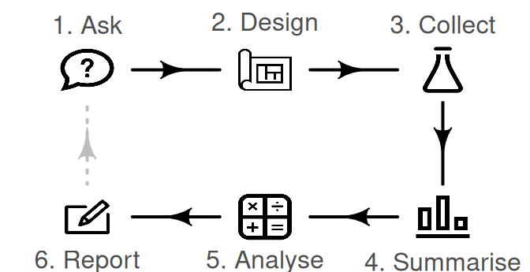
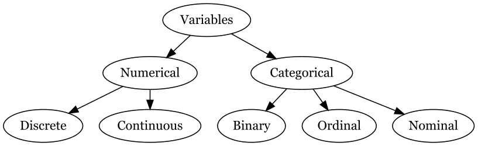
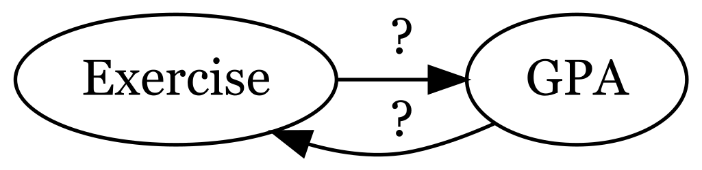
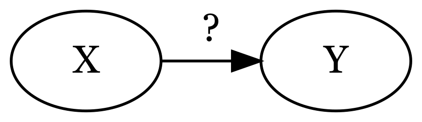
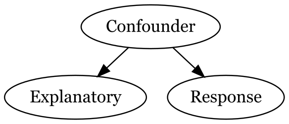
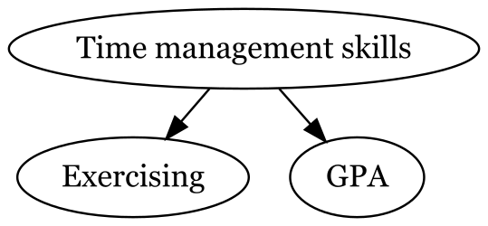
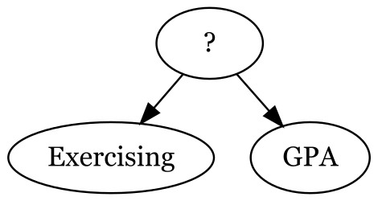

Variables and study design

Variables are characteristics we measure and record as columns in our data

Numerical variables (or quantitative) have mathematical meaning. There are two types:
Categorical variables (or qualitative) do not have mathematical meaning.
Variable types are important because they affect every part of the research process.
Example: Do CSUCI students who exercise regularly have higher GPAs?
Suppose we want to investigate this research question.

If two variables are related to each other in some way we would call them associated.
If two variables are not related to each other in any way we would call them unassociated.
We often want to know if there is a causal relationship between two variables.

Example: Do CSUCI students who exercise regularly have higher GPAs?
Which variables are our response and our explanatory?
We can not generally conclude causation, there could be other variables at play.
Confounding variables are variables that are causally related to both the explanatory and response variable

ASSOCIATION DOES NOT IMPLY CAUSATION!!

Can you think of another?

In observational studies, researchers study the research question without imposing any treatment / intervention (manipulated variable).
Example: Do CSUCI students who exercise regularly have higher GPAs?
If we just surveyed students, even if we observe that CSUCI students who exercise regularly have higher GPA, we cannot conclude that exercising regularly increases GPA.
In experiments, researchers assign the treatments / interventions, the values of the explanatory variable
Starting at 3 minutes: Video on random assignment
Example
Do CSUCI students who exercise regularly have higher GPA?
How can we set up an experiment to assess if regular exercise causes increased GPA? Is it ethical?
In a between-subjects experiment each case gets one level of the treatment (the explanatory variable)
In a within-subjects experiment each case experiences all levels of the treatment
In exploratory research you are exploring to find patterns or associations
In confirmatory research you have a specific hypothesis that you are testing
Let’s discuss the assigned research article which investigated cough drops.